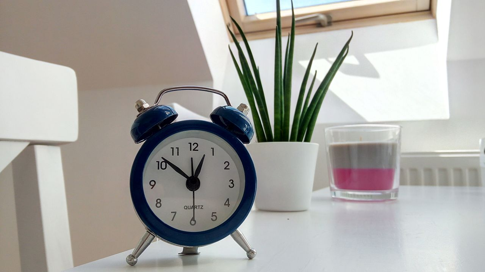

Photo: Blue Alarm Clock by Enikő Tóth on Pexels. Pexels License.
You take your backpack to the cafeteria to thank the student who helped you. You start talking and lose track of time. When you finally open your laptop, your stomach drops. The deadline passed five minutes ago, and the submission box is closed!
Your backpack is safe, but your project is late. You email your professor to explain what happened. Next time, you will submit your work before taking a break.
Try again: return to the moment you found your backpack.